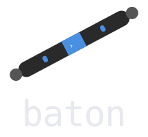

AI-native API
Every command supports a --json flag, so agent loops can read and write issues without scraping text.

Baton is a terminal-first issue tracker for the AI-augmented workflow. Human supervisors plan the work; autonomous agents pick it up, do it, and submit it for approval. Everything from the command line, all kept honest by a strict review loop and a full audit trail.
npm install -g baton-issue-tracker
When AI does much of the heavy lifting on a codebase, you need a single place
that decides what gets worked on and a reliable record of who
did what. Baton is that place. It stores every issue in a local SQLite
database (.baton/baton.db) right in your project. No external cloud service needed,
just right there in your repo alongside your code.
Every command speaks two languages: clean, human-readable output for people, and
structured --json for agents to parse. The result is one source of
truth that humans and AI can share without stepping on each other.
Every command supports a --json flag, so agent loops can read and write issues without scraping text.
A strict state machine means agents can submit work, but only a human can approve it. Nothing closes without a review.
Every claim, edit, submission, and status change is logged. Run baton log <id> to see exactly what happened.
Assign a token limit to any issue to keep agent costs visible and under control.
Issues live in a local SQLite file inside your repo. Clone the project, run init, and you're tracking.
Agents run baton claim <id> to take ownership of a specific issue and move it to In-Progress.
Every issue moves through the same predictable lifecycle.
An issue in review can be sent back to In-Progress if changes are requested.
baton init.
baton claim <id> to take
ownership of a specific issue, moving it to In-Progress.
baton view <id>, makes the changes, and tests them.
baton submit <id> to
send the finished work for human review.
baton approve <id> to close it, or
baton reject <id> with a reason to send it back.
Up and running in under a minute. Requires Node.js 22+.
# 1. Install Baton globally
npm install -g baton-issue-tracker
# 2. Initialize a tracker in your project
baton init
# 3. Register yourself as a supervisor
baton register --name "your-name" --type human
# 4. Create your first task
baton create --title "Fix login bug" --priority high
# 5. Check the board anytime
baton statusWant the full picture? Read the User Guide, the CLI Reference, or the JS Docs.